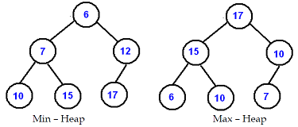
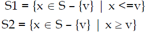
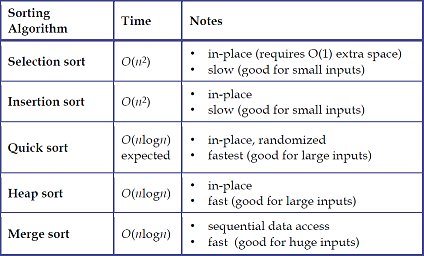

1. State the need for priority in queues. (Remember)
- Case 1 :
- Job Submitted to a printer
- Currently follows first in first out
- Performance can be improved by allowing important documents to get printed first
- Compared to 100-page document, one page document can be printed first so that overall waiting time can be reduced
- Case 2 :
- Multi user environment in an operating system
- Preference can be given to short jobs, important jobs so that overall waiting time can be decreased and productivity can be improved.
2. What is meant by priority queue?(Remember)
A priority queue is an abstract data type which is like a regular queue data structure, but where additionally each element has a "priority" associated with it. In a priority queue, an element with high priority is served before an element with low priority. If two elements have the same priority, they are served according to their order in the queue. Priority queues are often implemented with heaps.
3. Define binary heap. (Remember)
A binary heap is a complete binary tree which satisfies the heap ordering property. The ordering can be one oftwo types:
*Min-heap property: the value of each node is greater than or equal to the value of its parent, with theminimum-value element at root.
*Max-heap property: the value of each node is less than or equal to the value of its parent, with themaximum-value element at the root.

4. What are the 2 properties of a binary heap? (Remember)
-
Structure Property: The heap is a complete binary tree which means the tree is completely filled with the exception of the bottom levelthat is filled from left to right.
- Heap Order Property: In a heap, for every node x, the key in the parent of x is smaller than the key in x with thepossible exception of a root. Such a heap is known as MinHeap.
5. What is meant by percolate up? (Remember)
To insert an element X into the heap:
- We create a hole in the next available location.
- If X can be placed there without violating the heap property, then we do so and are done.Otherwise
- we bubble up the hole toward the root by sliding the element in the hole's parent down.
- We continue this until X can be placed in the hole.
- This general strategy is known as a percolate up
6.What is meant by percolate down? (Remember)
To perform DeleteMin in a min-heap:
- Remove the minimum; so, a hole is created at the root.
- The last element X must move somewhere in the heap.
- If X can be placed in the hole then we are done.
- Otherwise,
- We slide the smaller of the hole's children into the hole, thus pushing the hole one level down.
- We repeat this until X can be placed in the hole.
- This strategy is called as a percolate down
7. What is meant by sorting? Also, mention its two types. (Remember)
- Sorting is ordering a list of objects. Otherwise, sorting is a process of arranging items in ascending or descending order.
- If the number of objects issmall enough so that all elements fit into the main memory, sorting is called internal sorting.
- If the number of objects is solarge so that some of them reside on external storage during sorting, it is called external sorting.
8. How will you assess the performance of a sorting technique? (Remember)
Performance of sorting techniques are assessed in terms of
- computational complexity
- time complexity and
- space complexity
9.What is the main idea in Bubble sort? (Remember)
The basic idea underlying the bubble sort is to pass through the file sequentially several times.Each pass consists of comparing each element in the file with its successor (x[i] and x[i+1] and interchanging the two elements if they are not in proper order. At the end of first pass, a maximum element will reach the last place. In subsequent passes, the next maximum elements will be reaching their correct places.
10. Implement bubble sort. (Create)
voidbubbleSort(int array[], int n)
{ inti, j, temp;
for (i = n - 1; i> 0; i--)
{
for (j = 0; j< i; j++)
{
if (array[j] >array[j + 1])
{
temp = array[j];
array[j] = array[j+1];
array[j+1] = temp; } } } }
11. Analyze bubble sort. (Analyse)
In bubble sort implementation, outer loop is executed n-1 times (call it n, close enough)
Each time the outer loop is executed, the inner loop is executed n-1 times at first, linearly dropping to just once.
On average, inner loop executes about n/2 times for each execution of the outer loop
In the inner loop, the comparison is always done (constant time), the swap might be done (also constant time)
Result is n * n/2 * k, that is, O(n2/2 + k) = O(n2)
12. What is meant by divide and conquer strategy? (Remember)
- This solution methodology is recursive in structure
- Divide the problem into sub-problems that are similar to the original but smaller in size
- Conquer the sub-problems by solving them recursively. If they are small enough, just solve them in a straightforward manner.
- Combine the solutions to create a solution to the original problem
- Example: Merge and Quick sort techniques follow this strategy.
13. Write down the idea behind merge sort. (Remember)
Merge sort follows divide and conquer strategy for a given sent of n unsorted elements.
- Divide: Divide the n-element list to be sorted into two sub lists of n/2 elements each until it can no more be divided
- Conquer:If it is only one element in the list it is already sorted, return.
- Combine: Merge the two sorted sub lists into new list in sorted order.
14. Write down the idea behind quick sort. (Remember)
- Divide step:
- Pick any element (pivot) v in S, a set of n elements
- Partition S-{v} into two disjoint groups

- Conquer step: recursively sort S1 and S2using quick sort
- Combine step: sorted S1 (by the time returned from recursion), followed by v, followed by sorted S2 (i.e., nothing extra needs to be done) will produce new sorted list.
15. What is meant by searching? Write types of searching algorithms. (Remember)
Searching is the process of finding the presence of a particular element among collection of elements.
Types of search algorithms:
- 1. Algorithms that don’t make any assumptions about the order of the list
- Ex : Sequential/Linear Search - Compares the element to be found with every value in the list sequentially one after another
- 2. Algorithms that assume the list is already in order.
- Ex :Binary Search - Based on the value to be searched, the search space is halved every time till the value is found.
16. Write the algorithm for binary search. (Remember)
- Find the middle element for the given set of elements.
- Check the middle element with the search value
- If the middle element is equal to search value, then search is success and over
- If the search value is less than middle element, continue search with the elements before the middle element.
- If the search value is higher than middle element, continue search with the elements after middle element.
17. Compare various sorting algorithms. (Analyse)
